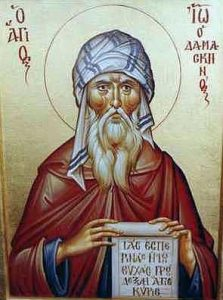
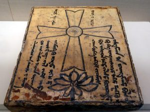

In the Christian Antiquity and later on during the Middle Ages, there was neither separation nor much distinction between the theological and the political matters. It was common that theological doctrines induced political philosophy and practice, and vice versa. Theological interpretations of the Incarnation as they developed during the Late Antiquity, had political extrapolations and correlated with the corresponding models of the church-state relations.
There were three main Christological trends during the fifth-sixth centuries, which were connected with the names of the bishops in the most important cities of the Roman world: Cyril of Alexandria (c. 376-444), Leo of Rome (c. 400-461), and Nestorius of Constantinople (c. 386 – c. 450). These Christological trends correspond to the three models of the church-state relations, which were formed in the same period: the eastern Roman, the western Roman, and the Persian.
***
The two basic questions that the theologians in the period between the fourth and the eighth centuries tried to answer were: who and what is Christ? In other words: what has been united in him and how it has been united?
By the fifth century, the church reached a consensus that Christ as a unique alive being is complete God who became completely human. During the fifth-sixth centuries, the question that occupied the minds of the theologians and became the main reason of the controversies and splits in the church, was how divinity and humanity came together in the person of Christ?
The archbishop of Alexandria Cyril articulated an answer, which framed the theological tradition of the Late Antiquity after the fifth century. His theological authority became unquestionable. The main theological point of the Alexandrian bishop was that Jesus Christ is a “single alive being” (ἓν ζῷον).[1]
Cyril did not separate the divine and the human sides of the “one and the same” (εἷς καὶ αὐτός)[2] Christ, but distinguished them “only through theoretical contemplation” (τῇ θεωρίᾳ μόνῃ).[3] He pointed out that to separate and to distinguish are different kinds of differentiation. The former splits one thing to two pieces, while the latter preserves integrity of the single thing.
Although divinity and humanity in Christ constitute one being and can only be distinguished, they do not obliterate or diminish each other. Not a slightest part of them goes missing in the result of the Incarnation. They also remain unchanged, each preserving its own property.[4] The divinity and humanity do not get confused with each other.
At the same time, they exchange their properties, something that has been called “communication of properties” (communicatio idiomatum).[5] It means that the divinity of Christ can act in human fashion, and the humanity – in divine.[6] The human properties of Christ can be ascribed to his divinity, and vice versa. It is therefore possible to speak about “divinisation (θέωσις)[7] of humanity of Christ, and about sufferings of his divinity.[8]
Such an “oxymoron” is possible because the divinity and humanity in Christ constitute one being and subject. Cyril strongly opposed the idea of two subjects in Christ – this was his main argument against the archbishop of Constantinople Nestorius and his confederates. For this reason, he hesitated in using the word “nature” (φύσις) in application to either divinity or humanity of Christ, because to him, nature implied a separate entity. Only the whole Christ was such an entity: “one nature of the incarnated Word” (μία φύσις Θεοῦ Λόγου σεσαρκωμένου).[9]
Later generations of Cyril’s interpreters disagreed on how to understand this phrase of Cyril: does it or does it not allow to speak about two natures in Christ? At the same time, they agreed that the divine and human properties in Christ, including his activities and wills, come from the same subject. The same Christ was the one-who-acts and the one-who-wills in both divine and human fashions.[10]
The Christological vision of Cyril became a theological mainstream during the Late Antiquity. In the same way, the corresponding model of the church-state relations turned to a keystone of the Byzantine political philosophy and practice. As Jesus Christ, to Cyril and his followers, was one and the same alive being, so Pax Romana after Constantine and especially after Justinian was transformed to a single theandric politeia, to use the phrase of Gregory Palamas (1296-1359).[11]
This politeia comprised both the church and the state. It embodied in the fullest possible way the Kingdom of God.[12] Since the apostolic times, the image, which applied to the church most, has been that of the Kingdom.[13] After conversion of the empire to Christianity, this image of the church matched the new image of the Christian state. Through their shared relationship to the Kingdom of God (the empire as its reflection[14], and the church as its partial embodiment[15]), the church and the empire converged into “one incarnated nature” of the Kingdom of God. They became “one and the same” (ἕν καὶ αὐτόν) – just as Christ is “one and the same” (εἴς καὶ αὐτός). Their distinction from each other was “only theoretical” (τῇ θεωρίᾳ μόνῃ).
At the same time, each component of the theandric symphony preserved its properties – just as, according to Cyril, the divinity and humanity of Christ did not change to one another. The church did not turn to state, and the state did not become church. Because they were parts of the same theopolitical entity, the church and the state adopted what in Christology has been called communicatio idiomatum.
The political side of the entity became “divinised,” and its ecclesial side “politicised.” The emperors adopted the identity of priests and bishops, while the church hierarchs embarked on a political identity, so that the title “patriarch,” for instance, was more political than ecclesial. The emperors convened the councils of the church and then promulgated their decisions as state laws, while the patriarchs often ruled cities and provinces.[16]
According to the mainstream Christological doctrine that went back to Cyril, in Christ, the second hypostasis of the Holy Trinity, the Word and Son of the Father, assumed human nature and became man – not a man assumed the Logos. In the political realities of Byzantium, this would imply a superior role of the patriarch. This did not become the case, however. Not the patriarch, but the emperor became the “hypostasis” of the symphonic unity of the church and the state. He was imago Dei[17] and imago Christi[18]. In terms of law, he was above the state and above the church. Thus, for the state, he was an alive law, a person to whom law did not apply.
As regards to the church, he promulgated the canons of the church as state law and could annul them whenever he wanted.[19] He convened the councils of the church, moved the borders of the dioceses, elevated and deposed the patriarchs and did many other things that only the church is supposed to do.
Christological controversies in the seventh century about activities and wills in Christ provided an even stronger theological framework that further legitimised such a role of the emperors in the church. The emperor Heraclius (r. 610-641), with assistance of his partner in “symphony” patriarch Sergius of Constantinople (in office 610-638), suggested a model of unity of Christ that combined the language of two distinct natures with the assumption that these two natures are united through the single activity and will.[20]
This doctrine was intended as an ecumenical bridge between the followers and adversaries of the council of Chalcedon. It also had political implications.[21] Heraclius inherited the empire in a deep crisis caused by the civil war. To deal with the political and social “wills” fighting each other, he chose the instrument of doctrine. Monenergism-monothelitism that Heraclius promoted implied that, although there are many different entities (“natures”) in the empire (primarily the church and the state, but not only them), there is one activity and one will that can unite them – the emperor’s one. An important argument of the monothelites against two wills in Christ was that multiple wills make them antagonise each other.
Not just Heraclius, but most Byzantine emperors favoured monistic theological models that stressed unity in Christ. Anastasius (r. 491-518) and Zeno (r. 474-491) supported the “one nature” (μία φύσις) language for Christ even after the Chalcedon prescribed using the “two-natures” (δύο φύσεις) language. Justinian, through his project of neo-Chalcedonianism, legitimised the “one nature” language along with the Chalcedonian language.
He also introduced the concept of a single activity of Christ, on which a century later Heraclius would build his monenergist-monothelite doctrine.[22] The theological doctrines that stressed unity of Christ, encouraged unity and solidarity in the Byzantine society. At the same time, they legitimised absolutism of the imperial authority.
There were theologians, however, who questioned both the radical forms of the monistic Christological doctrines and the absolutism of the imperial power. For instance, Maximus the Confessor (c. 580-662), who disagreed that Christ had one activity and will, also doubted the right of Heraclius to intervene in the matters of doctrine or the emperor’s identity as priest.[23] The same is with John of Damascus (c. 675-749), who insisted on the two wills in Christ[24] and wrote that “kings have no right to make laws for the church”.[25]
Byzantium was not homeland for John of Damascus. He grew up and was active in Palestine under the Umayyad dynasty. His experience of the church-state relations was different from that of Maximus and of most Byzantines. John belonged to the community, which in both religious and political terms was distinct from the Jewish and Arab majority around it. That is why he was more aware about distinctiveness of the church from the state and resisted the attempts of the emperors in Byzantium to offer political support to monothelitism, or worse, to invent the dogma and to impose it on the church, as it was in the case of iconoclasm.
Nevertheless, both political and theological dissent of such figures as Maximus the Confessor or John of Damascus should not be overstated. As they supported Cyril’s thesis about unity in Christ and not separation, but distinction of his two natures, in the same vein they did not undermine the political model of Byzantium with the emperor as its keystone. They only disagreed with abuses, which, as they believed, threatened the church. Speaking more generally, as no one questioned authority of Cyril, the theological schools debated only on who understood him better, so no one in Byzantium questioned the monistic model of the church-state relations – only the interpretations of such model from time to time clashed with each other.
A distinct interpretation of the “symphony” developed in the West. The western church did not disagree with Cyril on Christology and did not reject the eastern pattern of the church-state relations. However, it had a slightly distinct approach to both Christology and political philosophy.
In the fifth century, after the collapse of the western part of the Roman empire, one partner in the “symphony” there, the state, was gone. The church faced a situation when it had to rely on itself. It had to take care of many things that it was accustomed to expect from the state, such as social work and education. This led to emergence in the West of the political culture, which stressed distinction, and sometimes even separation, between ecclesia and politeia.
The foundations of this culture were laid down by Augustine of Hippo (354-430). He personally experienced the collapse of the Roman institutions and, consequently, of the “symphony” between the church and the state in North Africa. This made him to accentuate in his De civitate Dei the distinctiveness of the church from the state. Pope Gelasius (492-6) articulated this distinctiveness even more emphatically, in almost dichotomic terms, when he wrote to the emperor Anastasius:
Two there are, august Emperor, by which this world is ruled: the consecrated authority of priests and the royal power. Of these the priests have the greater responsibility, in that they will have to give account before God’s judgment seat for those who have been kings of men. You know, most clement son, that though first of the human race in dignity, you submit devoutly to those who are preeminent in God’s work, and inquire of them the causes of your salvation, so learning, as concerns the reception and due administration of the sacraments, to be subordinate in religious matters. You know, therefore, that you should depend upon their judgment in such questions, not attempt to bring them to your will. Even the masters of religion, conscious that divine providence has conferred the empire upon you, obey your laws as public discipline requires, lest they should seem to obstruct the judgment you pronounce even in trivialities. How resolutely, then, do you think, should you obey those who were appointed to promulgate the venerable mysteries? As it is a serious matter, indeed, bishops to remain silent on a question of proper observance in worship, so there would be grave danger if (perish the thought!) those who should obey them were to disregard them. And if the faithful ought in general to submit to the priesthood as a whole when it handles divine mysteries rightly, how much more should deference be shown to the occupant of the highest see, chosen by divine sovereignty to be first among priests and held in religious honor by the whole church ever since? Your Piety can plainly see that by no human counsel whatever can one raise himself to the prerogative or status of one whom Christ’s own words set over all, whom the venerable church has always acknowledged and devoutly accepted as its Primate. Things fixed by divine judgment may by human presumption be assailed; overwhelmed by anybody’s power they cannot be.[26]
This long statement of Gelasius speaks of the church and of the state as if they were two separate natures. It reflected, on the one hand, the political situation in the western part of the Roman world. The church there had not yet accommodated itself to the new Gothic rule, something that would happen later on under the Carolingians. On the other hand, the statement of Gelasius sounds like a political extrapolation of the theological statement of another pope, Leo.
Pope Leo (in office 440-461) in his letter to the council of Chalcedon, known also as Tome of Leo, articulated Christology, which was slightly different from the Christology of Cyril of Alexandria. It was not completely different, and the two Christologies certainly converged, but it put emphasis not so much on the unity of Christ as a single being, as on the distinctiveness of his two natures.
Leo insistently applied to divinity and humanity in Christ the word forma, which was even stronger than the Greek “φύσις.” Moreover, he implied that the two formae are also subjects of Christ’s activities and wills. He did not say this directly, but one can interpret so the following sentences: “The activity of each form is what is proper to it in communion with the other: that is, the Word performs what belongs to the Word, and the flesh accomplishes what belongs to the flesh”[27] (Agit enim utraque forma cum alterius communione quod proprium est, verbo scilictet operante quod verbi est, et carne exequente quod carnis est[28]).
The Latin phrase is ambivalent. It can mean that the subject of activities is Christ himself, who agit them through the formae (if the word was used as ablativus instrumentalis). However, if the word forma was used as nominativus, then it means that each nature of Christ is the subject of activities and agit what is proper to it. Whatever is the case, interpreted in the political terms, the Tome of Leo would advocate a rather sharp distinction between the church and the state. It implied that they are two subjects, each with its own will-authority.
Leo’s Christological vocabulary was accommodated by the council of Chalcedon, which combined it with the theology of Cyril of Alexandria. The Chalcedon interpreted Cyril in the terms suggested by Leo. It produced a new synthetic formula that balanced the eastern emphasis on Christ’s unity with the western preoccupation with completeness of his divinity and humanity.
The definition of the Chalcedon, on the one hand, stressed that Christ is one and the same (“ἕνα καὶ τὸν αὐτὸν ὁμολογεῖν υἱὸν τὸν Κύριον ἡμῶν Ἰησοῦν Χριστὸν συμφώνως ἅπαντες ἐδιδάσκομεν”[29]). On the other hand, he is “acknowledged in two natures which undergo no confusion, no change, no division, no separation”[30] (“ἐν δύο φύσεσιν ἀσυγχύτως ἀτρέπτως ἀδιαιρέτως ἀχωρίστως γνωριζόμενον”[31]).
The theological synthesis of the Chalcedon soon became reflected in the new political statements that institutionalised the Byzantine model of “symphony” between the church and the state. The novella 6 in the Justinian’s Codex iuris civilis embodied these Chalcedonian balances in a particular way:
The greatest blessings of mankind are the gifts of God which have been granted us by the mercy on high – the priesthood and the imperial authority. The priesthood ministers to things divine, the imperial authority is set over, and shows diligence in, things human; but both proceed from one and the same source, and both adorn the life of man. Nothing, therefore, will be a greater matter of concern to the emperor than the dignity and honour (honestas) of the clergy; the more as they offer prayers to God without ceasing on his behalf. For if the priesthood be in all respects without blame, and full of faith before God, and if the imperial authority rightly and duly adorn the commonwealth committed to its charge, there will ensue a happy concord, which will bring forth all good things for mankind. We therefore have the greatest concern for the true doctrines of the God-head and the dignity and honour of the clergy; and we believe that if they maintain that dignity and honour we shall gain thereby the greatest of gifts, holding fast what we already have and laying hold on what is yet to come. ‘All things’, it is said, ‘are done well and truly if they start from a beginning that is worthy and pleasing in the sight of God.’ We believe that this will come to pass, if observance be paid to the holy rules [canons] which have been handed down by the Apostles – those righteous guardians and ministers of the Word of God, who are ever to be praised and adored – and have since been preserved and interpreted by the holy Fathers.[32]
This text makes a clear distinction between priesthood and imperium as two faculties correspondent to the things “divine”’ and “human” – the notions clearly from the Christological vocabulary. At the same time, it frames this distinction with the common source and the common goal of the church and of the empire. The structure of the preface to the novella 6 repeats the structure of the Chalcedonian definition: a strong statement on Christ’s unity, then acknowledgement of his two natures, followed by the conclusion that stresses the unity again.
The novella also speaks of the one divine source for the priesthood and the empire, acknowledges distinction between them, and concludes that they have common purpose – the life of man. After that, the text underscores the mutual influence that priesthood and imperium exercise on each other. This “symphony” between them is nothing else but a political version of the communicatio idiomatum.
Christology of unity, which was articulated by Cyril and interpreted further by his followers, was developed as rejection of another Christological model associated with the name of the archbishop of Constantinople Nestorius. Nestorius gave this model his name, but he was not the one who designed it. “Nestorian” Christology emerged from the way of praising God and interpreting the Scripture in the Greco-Syrian milieu, in the eastern part of the Roman world. The Antiochian theologian Theodore of Mopsuestia (c. 350-428) amalgamated it into a doctrine, which was branded “Nestorianism.”
The Christological scheme of “Nestorianism” was the following. Jesus Christ is effectively a single appearance of what is essentially two entities: God and man.[33] The eastern Syrian theologians called these entities “natures”. The difference between the Chalcedonian and the “Nestorian” notions of the “nature” was like the difference between an adjective and a noun: between divine and God, or human and man. To the “Nestorians,” these natures were not just distinguished, as the Chalcedonians believed, but they coexisted in the way that self-sufficient beings touch each other.[34]
The Christological model that the “Nestorians” propagated was defeated by the Cyrillian model of substantial unity, at least in the Roman empire. However, the “Nestorians” were made welcome by the eternal rival of Rome, the Persian empire. The Persian dynasties had been hostile and even murderous to the Christians, whom they considered agents of Rome.[35]
The “Nestorians,” however, were for them enemies of their enemies, and thus were different from the Christians of the earlier generations. They became well received in the Persian dominion together with their doctrinal antipodes, who had been also forced out of the Roman empire – the radical mia-physite anti-Chalcedonians.
In the Persian empire, they gradually adopted a common political identity. The Persian “Nestorians” differentiated from the Roman “Nestorians,” and the “Nestorian” identity in Persia eventually came to mean Christianity not associated with the Byzantine symphony.
This Christianity developed a different model of symphony with the state, and a different understanding of what is the church. The Christian church in Persia was unable to enjoy protection of the emperors and privileges that stem from the established status. It was a social group, along with other social groups based on religion, which was tolerated by the civil authorities.
Although Zoroastrianism was an official cult, the Persian kings offered safe harbour to Buddhists, Jews, Manichaeans, and all sorts of dissident Christians. The Roman and the Persian empires, these “two eyes of the earth,” in the words of the Byzantine historian Theophylact Simocatta[36], saw the relationship between the religion and the state from different angles.
In the Persian empire, the Christian church 1) had to share the same public space with other religions; 2) had to rely on itself in developing its structures; 3) and had to develop a cautious partnership with the state, which at any moment could turn hostile. This made the church in the Persian setting more tolerant and self-reliant – more the church. Unlike the Roman church, the Persian church did not identify itself with the empire. It understood itself as an ecclesial entity, which is different from the political entity of the state.
The “Nestorian” Christological model helped the church to successfully develop in Persia, and from there to establish itself even in China, under the Tang dynasty. Indeed, if the two natures of Christ are connected loosely and each is a self-sufficient entity, then the ecclesia that takes this as a model for its relationship with the state, keeps distance from the politeia. The church does not isolate itself from the state, on the one hand. On the other hand, it does not mix up with the state into a single theopolitical entity either. The church preserves autonomy in this Christologically-inspired model.
In conclusion, the models of the church-state relations, as they developed in the Late Antiquity, correspond to the three interpretations of the Incarnation elaborated in the same period. However, it is difficult, if possible at all, to establish causality between these models: whether the theological models inspired the political ones or vice versa. Probably the influence was mutual. The language that theologians and politicians used to express their ideas was also similar. Therefore, when we speak about political theology in the Late Antiquity we should keep in mind its theological concerns, and the other way around.
Cyril Hovorun is an Associate Professor of Theological Studies at Loyola Marymount University in Los Angeles and Acting Director of Huffington Ecumenical Institute. A graduate of the Theological Academy in Kyiv and National University in Athens, he accomplished his doctoral studies at Durham University under the supervision of Fr Andrew Louth. Then he was a Chairman of the Department for External Church Relations of the Ukrainian Orthodox Church, First Deputy Chairman of the Educational Committee of the Russian Orthodox Church, and later a Research Fellow at Yale and Columbia Universities, Vice-Dean of Sankt Ignatios Theological Academy in Sweden.
He has published several books in different languages, including Ukrainian Public Theology (Kyiv: Dukh і Litera, 2017, in Ukrainian), Scaffolds of the Church: Towards Poststructural Ecclesiology (Eugene, OR: Cascade, 2017); Wonders of the Panorthodox Council (Moscow: Christian Book Club, 2016, in Russian); Meta-Ecclesiology, Chronicles on Church Awareness (New York: Palgrave Macmillan, 2015); From Antioch to Xi’an: an Evolution of ‘Nestorianism’ (Hong Kong: Chinese Orthodox Press, 2014, in Chinese); and Will, Action and Freedom: Christological Controversies in the Seventh Century (Leiden – Boston: Brill, 2008).
[1] Ad Succensum, in E. Schwarz (ed.), Acta Conciliorum Oecumenicorum, series prima, v. I.1, (Berlin and Leipzig: Walter de Gruyter, 1928), 6.162:9.
[2] In Joannem, in P.E. Pusey (ed.), Sancti patris nostri Cyrilli archiepiscopi Alexandrini in D. Joannis evangelium, vol. 1, (Oxford: Clarendon Press, 1872), 76.12; Thesaurus, in PG 75, 125.17; 473.7.
[3] Quod unus sit Christus, in G.-M. de Durand (ed.), Cyrille d’Alexandrie. Deux dialogues christologiques (Sources chrétiennes 97, Paris: Éditions du Cerf, 1964), 736.27.
[4] See Sermo ad Alexandrinos, in Pusey, Sancti patris nostri Cyrilli archiepiscopi Alexandrini in D. Joannis evangelium, vol. 3, 539.25.
[5] See Grzegorz Strzelczyk, Communicatio idiomatum: lo scambio delle proprietà: storia, status quaestionis e prospettive, (Roma: Pontificia Università Gregoriana, 2004).
[6] See Martin of Rome at the Lateran council 649, in R. Riedinger (ed.), Acta Conciliorum Oecumenicorum, series secunda, v.1, (Berlin and Leipzig: Walter de Gruyter, 1984), 148.32–151.5.
[7] See Vladimir Kharlamov (ed.), Theosis: Deification in Christian Theology, vol. 2, (Cambridge: James Clarke & Co., 2012); Norman Russell, Fellow Workers with God: Orthodox Thinking on Theosis, (Crestwood, NY: St. Vladimir’s Seminary Press, 2009); Christopher Veniamin, The Orthodox Understanding of Salvation: Theosis in Scripture and Tradition, (Dalton, PA: Mount Thabor Publishing, 2013); Kenneth Wilson, Theosis, (London: Regency Press, 1974).
[8] See Dana Iuliana Viezure, “Verbum Crucis, Virtus Dei: a Study of Theopaschism From the Council of Chalcedon (451) to the Age of Justinian”, (University of Toronto, 2009).
[9] Quod unus sit Christus, in de Durand, Cyrille d’Alexandrie. Deux dialogues christologiques, 378.2-3.
[10] See Cyril Hovorun, Will, Action and Freedom, (Leiden; Boston: Brill, 2008), 135-147.
[11] Gregory Palamas, Homily 4, in Παναγιώτου Χρήστου, Γρηγορίου τοῦ Παλαμᾶ ἅπαντα τὰ ἔργα, vol. 9 (Thessalonica: Πατερικαὶ Ἐκδόσεις Γρηγόριος ὁ Παλαμᾶς, 1985), 4.12.11. The term theandric (θεανδρική) was first applied to the activity of Christ by Ps-Dionysius Areopagite: Epistle 4, in G. Heil and A.M. Ritter (eds.), Corpus Dionysiacum II: Pseudo-Dionysius Areopagita. De coelesti hierarchia, de ecclesiastica hierarchia, de mystica theologia, epistulae (Berlin: De Gruyter, 1991), 4.1.19; see also Anastasius of Sinai, Capita vi adversus monotheletas (e cod. Vat. gr. 1409), in K.-H. Uthemann (ed.), Sermones duo in constitutionem hominis secundum imaginem Dei necnon opuscula adversus Monotheletas (Turnhout: Brepols, 1985), 6.1.19; 7.3.56; 8.3.84; ff.; John of Damascus, Expositio fidei, in P.B. Kotter (ed.), Die Schriften des Johannes von Damaskos, vol. 2 (Berlin: De Gruyter, 1973), 63.40.
[12] See Gilbert Dagron, Emperor and Priest: the Imperial Office in Byzantium, (Cambridge; New York: Cambridge University Press, 2003), 156.
[13] Jesus used it many times in his direct speech: Matt 12:28; 19:24; 21:31; 21:43; Mark 1:15; 4:11; 4:26; 4:30; 9:1; 9:47; 10:14; 10:15; 10:23–25; 12:34; 14:25; Luke 4:43; 6:20; 7:28; 8:10; 9:27; 9:60; 9:62; 10:9; 10:11; 11:20; 13:18; 13:20; 13:28–29; 16:16; 17:20–21; 18:16; 18:17; 18:24–25; 21:31; 22:16; 22:18; John 3:3; 3:5.
[14] See Dagron, Emperor and Priest: the Imperial Office in Byzantium, 22.
[15] See See Hans Küng, The Church, (New York: Sheed & Ward, 1967), 88–96.
[16] For instance, under Heraclius, the patriarch of Alexandria Cyrus was appointed a prefect of Egypt, and the patriarch of Constantinople Sergius managed the matters of the entire empire, while the emperor led the army in the eastern front.
[17] See Nikephoros Blemmydes, The King’s Statue, 2, in Ernest Barker, Social and Political Thought in Byzantium: from Justinian I to the Last Palaeologus, (Oxford: Clarendon Press, 1957), 155.
[18] See George Ostrogorsky, “The Byzantine Emperor and the Hierarchical World Order”, The Slavonic and East European Review 35, no. 84 (1956), 4.
[19] See Deno J. Geanakoplos, “Church and State in the Byzantine Empire: a Reconsideration of the Problem of Caesaropapism.” Church History 34, no. 4 (1965), 383.
[20] See Cyril Hovorun, Will, Action and Freedom, (Leiden; Boston: Brill, 2008), 104-105.
[21] See Cyril Hovorun, “Controversy on Energies and Wills in Christ: Between Politics and Theology”, Studia Patristica XLVIII (2010): 217–20.
[22] See Cyril Hovorun, “Maximus, a Cautious Neo-Chalcedonian”, in Pauline Allen and Bronwen Neil (eds.), The Oxford Handbook of Maximus the Confessor, (Oxford; New York: Oxford University Press, 2015): 106-26.
[23] Maximus during the trials by the imperial court stated: “No emperor was able to persuade the Fathers who speak of God to be reconciled with the heretics of their times by means of equivocal expressions.” This is because it was not the business of civil authorities “to make an inquiry and to define on the subject of the saving teachings of the catholic church”, but an exclusive responsibility and “the mark of priests”. Then he was asked if the Christian emperor had a responsibility over the doctrine on the pretext of being also a priest. He replied to this categorically that the emperor is not a priest – he does not perform sacraments and does not “wear the symbols of the priesthood, the pallium and the Gospel book, as [he wears the symbols] of imperial office, the crown and purple”. In Pauline Allen and Neil Bronwen, Maximus the Confessor and His Companions: Documents From Exile, (Oxford; New York: Oxford University Press, 2002), 57.
[24] See his De duabus in Christo voluntatibus, in P.B. Kotter, Die Schriften des Johannes von Damaskos, vol. 4 (Berlin: De Gruyter, 1981): 173-231.
[25] Orationes de imaginibus tres, 2.12, in Oliver O’Donovan and Joan Lockwood O’Donovan, From Irenaeus to Grotius: a Sourcebook in Christian Political Thought, 100-1625, (Grand Rapids, Mich.: Eerdmans, 1999), 213-214.
[26] E. Schwartz, Publizistische Sammlungen zum Acacianischen Schisma (Munich: Verlag der Bayerischen Akademie, 1934), in O’Donovan and O’Donovan, From Irenaeus to Grotius: a Sourcebook in Christian Political Thought, 100-1625, 179.
[27] Norman P. Tanner, Decrees of the Ecumenical Councils. Vol. 1, (London: Sheed & Ward, 1990), *79.
[28] Leo of Rome, Epistula papae Leonis ad Flavianum episcopum Constantinopolitanum de Eutyche, in Guiseppe Alberigo et al. (eds.) Conciliorum Oecumenicorum Generaliumque Decreta: Editio Critica. (Turnhout: Brepols, 2006), 129.95-97.
[29] Definition fidei, in Alberigo, Conciliorum oecumenicorum generaliumque decreta: editio critica, 136.361-3.
[30] Tanner, Decrees of the Ecumenical Councils. Vol. 1, *86.
[31] Definition fidei, in Alberigo, Conciliorum oecumenicorum generaliumque decreta: editio critica, 137.378-80.
[32] In Andrew Louth, “Ignatios or Eusebios: Two Models of Patristic Ecclesiology”, International Journal for the Study of the Christian Church 10, no. 1 (2010), 47.
[33] See Theodore of Mopsuestia, Homiliae catecheticae 7, in R. Tonneau and R. Devreesse (eds.), Les homélies catéchétiques de Théodore de Mopsueste, (Studi e testi 145, Rome: Biblioteca Apostolica Vaticana, 1949), 161.
[34] See Theodore of Mopsuestia, Epistula ad Domnum, in Patrologia Graeca, vol. 66, 1012C.
[35] See Cyril Hovorun, 由安提阿到西安 — 聶斯托利派的演變 (From Antioch to Xi’an: an Evolution of “Nestorianism”), Hong Kong: Chinese Orthodox Press, 2014, 24.
[36] Theophylact Simocatta, Historia, in Carl de Boor (ed.), Theophylacti Simocattae Historiae, (Bibliotheca scriptorum Graecorum et Romanorum Teubneriana, Leipzig: Teubner, 1887), 119. See on the relations between the two empires: Beate Dignas and Engelbert Winter, Rome and Persia in Late Antiquity (Cambridge: Cambridge University Press, 2007).